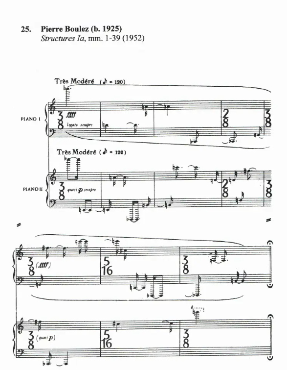

El serialismo integral es una corriente compositiva surgida a fines de los años 1940 y consolidada en la década de 1950 que extiende el principio del serialismo —originalmente aplicado a la altura de los sonidos (dodecafonismo)— a todos los parámetros musicales: duración, intensidad, timbre, articulación, registro y densidad sonora. Cada parámetro puede organizarse mediante series o sucesiones determinadas, buscando un control sistemático del material.
La idea central es que ningún aspecto de la composición quede al azar; en su lugar, se definen series (ordenaciones fijas) que determinan las decisiones musicales. Estas series se manipulan por, inversiones y retrogradaciones y otras operaciones formales para generar la estructura de la obra.
Structures I (Pierre Boulez, 1952) es frecuentemente citado como ejemplo paradigmático. En esta obra, Boulez toma ideas derivadas de estudios previos (por ejemplo, el Mode de valeurs et d'intensités de Messiaen) y aplica series a alturas, duraciones, intensidades y ataques para construir un discurso muy organizado y experimental.
El serialismo integral representó una ruptura con la tradición tonal y el neoclasicismo, influyendo en gran parte de la música de posguerra. Con el tiempo, varios compositores moderaron la rigidez del sistema y mezclaron técnicas seriales con enfoques más abiertos (aleatoriedad controlada, espectralismo, técnicas mixtas).
Primer hoja
